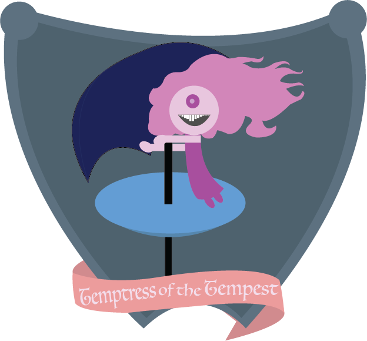
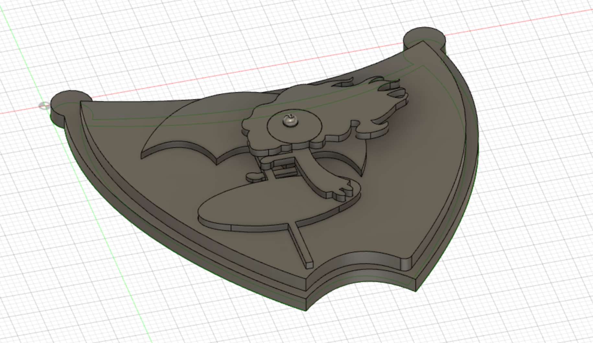

Berenice Cortes
Temptress of the Temptest
INTIMACY | LITLE BIG WORLD | WEIRDOS CHAT | SALTY | BUTTERCUP | HOME | QUEEN FLOWER | IT | LOST | ODE TO | TEMPTRESS OF THE TEMPTEST |




Temptress of the Tempest (4 in. x 6 in.) was designed on a backstory createad from an incident that occurred in the art quad with a table.
For this project I was asked to come up with a backstory to a place I frequent a lot and in some manner declare myself: queen, troll
empress, king, etc. So, I choose, with the help of Steve Durie, to proclaim myself: Temptress. The "temptest" part comes from the
incident:one day I was doing hw on the blue table in the art quad and it became really windy to the point the umbrella fell down and
almost crashed on top of me. And so I became: Temptress of the Tempest.
Once my story was built I designed a sketch on Illustrator, shown above, and once that sketch was finished I moved on to
finilizing the block printout utilizing Fusion 360. In Fusion 360 I created a simplified version and a coat of arms with a focus on
detail. The block printout had to be simplified in order to fit the router bit without any problems. I used the CNC router to cut out
the simplified version of my block. In order to cut the design I had to learn to use the machine and I approched the challenge by
asking for help and by doing a dry run before cutting out the block. I loaded the G-code in MACH3 and started cutting; the cut took
approximately 30 minutes. The last part of this project is to use ink on the block(stamp) and some sort of canvas to "stamp the design.
Finally, as a class we will visit our designated locations and set up our stamps as a sign of proclamation.